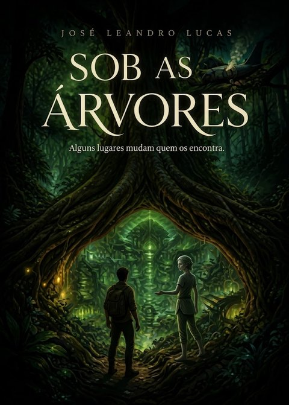

Um conto de José Leandro Lucas
Inspirado nos temas de A Mão Esquerda da Escuridão, de Ursula K. Le Guin.
O voo de Manaus para Lima levava 63 pessoas. Caio Ferraz, repórter de São Paulo, cochilava com o fone no ouvido quando o avião começou a tremer. Ouviu gritos, depois um estrondo, e depois nada.
Acordou de cara na lama, com o cheiro de querosene e de folhas molhadas. Ao redor, só destroços e silêncio. Chamou por alguém durante horas. Ninguém respondeu.
No terceiro dia, com febre e uma perna ferida, desmaiou perto de uma árvore enorme. A última coisa que viu foram olhos o observando entre as raízes.
Acordou numa sala redonda, de paredes lisas e quentes, iluminada por uma luz verde que não vinha de lugar nenhum. Estava debaixo da terra. Por uma abertura no teto, via raízes e um pedaço de céu filtrado pelas copas.
Pessoas entravam e saíam. Mediam, observavam, anotavam. Tinham rostos que Caio não conseguia classificar. Não eram homens nem mulheres. Ou eram as duas coisas, ou nenhuma. Ele tentava encaixá-las numa caixa, e elas escapavam de todas.
E percebeu, aos poucos, que ali o estranho era ele. Apontavam para o corpo dele com curiosidade e certo receio, como se olha para um bicho raro. Para aquele povo, ter um sexo fixo era uma anomalia.
Quem mais aparecia era Jaci. Tinha mãos finas, voz baixa e uma paciência infinita. Trazia uma máquina pequena, cheia de fios, que colava no pescoço de Caio enquanto ele falava.
Caio levou semanas para entender: aquele aparelho tinha sido criado para decifrar o som dos animais pela vibração. O canto do uirapuru, o ronco da onça, o grito do macaco. E Jaci o estudava do mesmo jeito.
Até que, numa manhã, Caio disse "água", e a máquina devolveu um som na língua deles. Jaci parou. Olhou para ele de um jeito diferente, como quem olha para uma pessoa, não para um animal.
— Você… fala — traduziu a máquina.
— Faz tempo — respondeu Caio, e riu pela primeira vez desde a queda.
Depois disso, Jaci passou a levá-lo pelos túneis. A cidade se estendia por quilômetros debaixo do solo, com plantações iluminadas, rios subterrâneos e salas de estudo. Em cima, só floresta. Nenhum satélite jamais tinha visto nada.
Caio não via chefes gritando, nem disputas de poder. As decisões eram tomadas em roda, devagar. Ninguém mandava em ninguém por ter nascido de um jeito ou de outro.
Uma noite ele tentou explicar o mundo de fora: homens que achavam que valiam mais que as mulheres, guerras por orgulho, gente brigando para ser maior que os outros. Jaci ouviu tudo pela máquina, em silêncio.
— Por que vocês se dividem em dois para depois brigar? — perguntou.
Caio não soube responder.
Foi aí que começou. Primeiro, a voz ficou mais suave. Depois o rosto, no reflexo da água, parecia outro. A barba parou de crescer. O corpo mudava devagar, de um jeito que ele não sabia nomear.
Caio entrou em pânico e correu até Jaci.
Jaci o levou à parte mais funda dos túneis, uma câmara antiga com pedras que brilhavam fraco no escuro.
— Isso veio do céu, há muito tempo — traduziu a máquina. — Uma pedra que caiu e mudou tudo. Ela muda quem vive aqui. Sempre mudou.
Uma radiação. Era isso que fazia aquele povo ser como era. Para eles, não era doença nem anomalia. Era simplesmente a vida.
E agora estava nele.
Na mesma época, Jaci trouxe a notícia: havia estranhos na floresta. Homens de uniforme, com drones e cães, seguindo os destroços do avião. A cada dia chegavam mais perto da árvore grande.
Caio entendeu o que significava. Se o encontrassem, encontrariam a cidade. Viriam cientistas, governos, câmeras. O mundo de baixo deixaria de existir.
Ele podia voltar para casa. Para a mãe, para o apartamento em São Paulo, para a vida que conhecia.
Mas, quando pensava em São Paulo, já não sentia saudade. Sentia um aperto, quase medo. O trânsito, as brigas, as pessoas medindo umas às outras. A cada dia, o mundo de fora parecia mais estranho, e o de baixo mais seu.
Ele não sabia mais se era ele mesmo pensando aquilo, ou a pedra pensando por ele.
Na última manhã, os homens do resgate chegaram à árvore grande. Caio estava logo abaixo, no túnel, a poucos metros. Ouvia as vozes, em português.
— Aqui tem marca de pegada — disse um deles. — Pequena. Pode ser de algum sobrevivente.
Bastava um grito. Uma palavra.
Caio fechou os olhos. Sentiu a mão de Jaci no seu ombro. E ficou em silêncio.
Os passos se afastaram. Os cães latiram mais longe. Horas depois, o barulho do helicóptero sumiu no céu.
Três semanas depois, os jornais anunciaram: "Nenhum sobrevivente no voo Manaus–Lima".
No fundo da terra, Caio se olhou no reflexo da água. Não reconheceu o rosto, e mesmo assim sorriu para ele.
Até hoje não sabe se escolheu ficar, ou se foi escolhido.
Fim.
Gostou? Compartilhe com alguém que gosta de uma boa história.